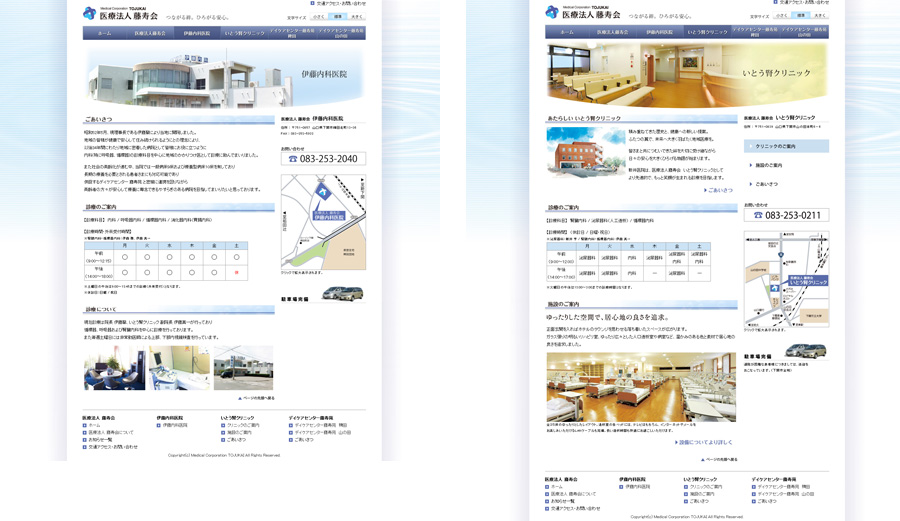

「医療法人 藤寿会」Webサイト
山口県下関市にクリニックやデイケアセンターを持ち、総合的なヒューマンケアサービスを提供する
医療法人 藤寿会のWebサイトです。

- 制作期間
- 2011年4月中旬〜7月中旬
(2011年7月18日 サイトオープン) - 使用ツール
- Illustrator / Photoshop / Dreamweaver / Fireworks
- コンセプト
- 患者さまに安心感を与えるWebサイト
- 備考
- デザイン草案・コーディング担当

山口県下関市にクリニックやデイケアセンターを持ち、総合的なヒューマンケアサービスを提供する
医療法人 藤寿会のWebサイトです。